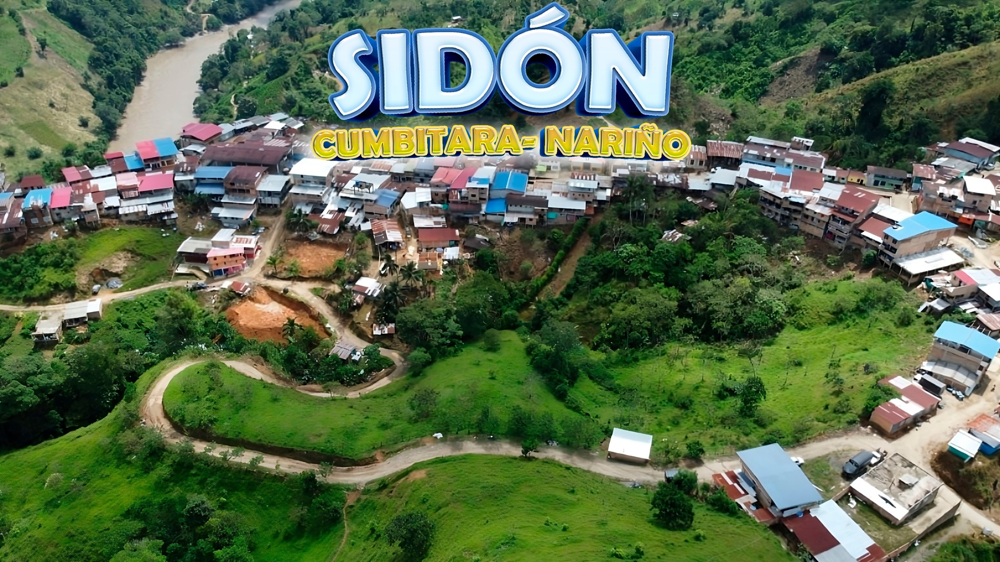
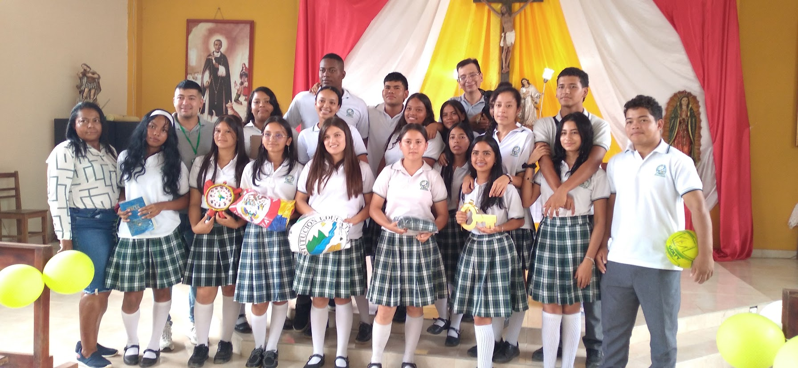
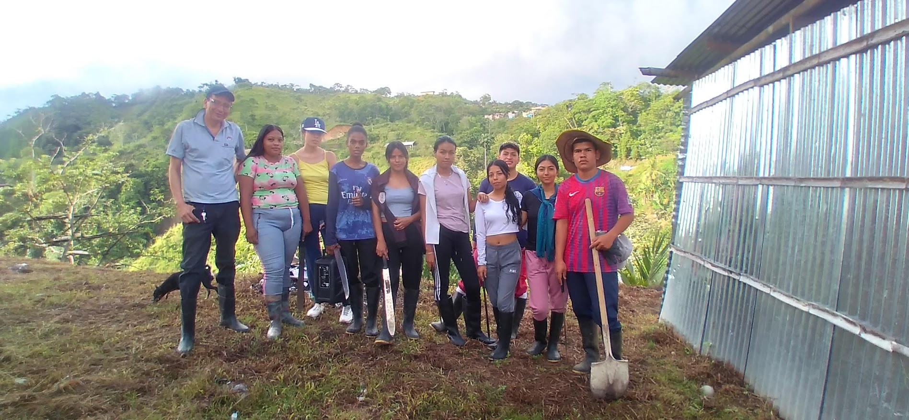
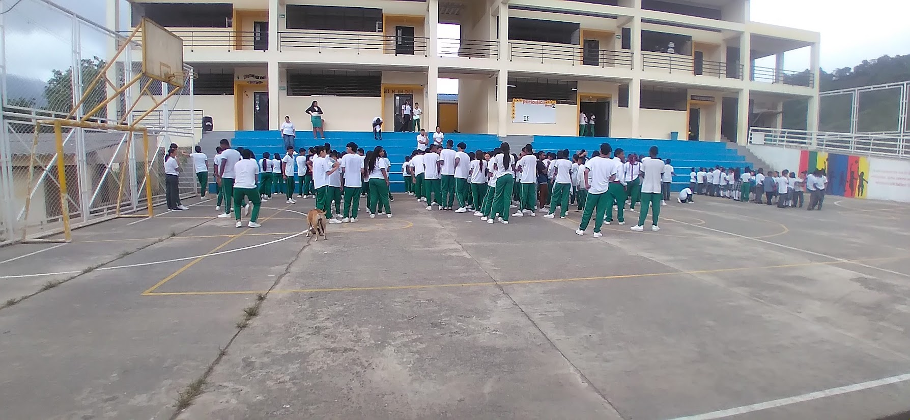
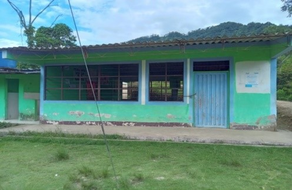
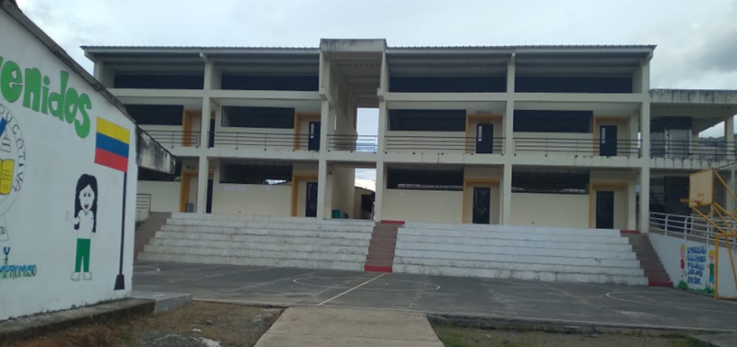
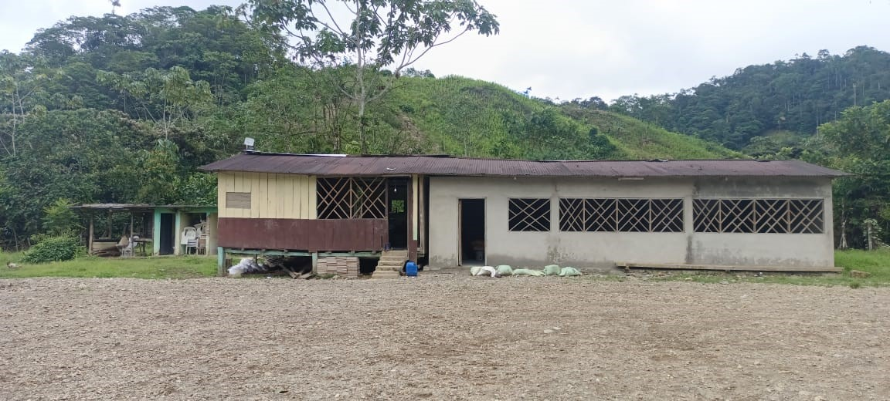

Institución Etnoeducativa de Sidón
«Educación, Paz y Progreso, un compromiso de todos»
Formamos niños, jóvenes y líderes con identidad afrodescendiente, arraigo territorial y excelencia humana. Conectando 23 sedes educativas en la cuenca del río Patía con pedagogías propias, convivencia y ciencia.
Educación de calidad, respeto y transformación territorial
La Institución Etnoeducativa de Sidón es un establecimiento oficial adscrito a la Secretaría de Educación Departamental de Nariño, ubicado en el corregimiento de Sidón, municipio de Cumbitara, en la histórica subregión del Bajo Patía.
Ofrecemos formación integral desde el grado preescolar hasta la educación media académica, fundamentada en un modelo pedagógico social, comunitario e intercultural. Reconocemos la riqueza y multiplicidad de ritmos de aprendizaje de cada estudiante, promoviendo la inclusión como un principio de derechos, equidad y dignidad humana.
Bajo la rectoría de la magíster Segunda Georgina Rosero Álvarez y con el trabajo colectivo del cuerpo docente, líderes comunitarios y familias, construimos un entorno protector, digno y de esperanza para las nuevas generaciones.

Sede Principal Sidón: Infraestructura moderna de dos niveles con ascensor para accesibilidad universal, sala de informática, polideportivo y restaurante escolar.
Educación propia, convivencia y futuro
Cuatro pilares guían nuestro quehacer pedagógico para honrar los saberes de los mayores y abrir oportunidades reales a los jóvenes de Sidón.

Identidad Etnoeducativa
Fortalecemos la memoria viva de las comunidades afrocolombianas, la oralidad, las cantadoras tradicionales y el rescate de saberes ancestrales del río Patía.

Residencia Escolar y Paz
Garantizamos el derecho a la educación de niños de veredas apartadas mediante la residencia escolar, con protocolos protectores y justicia restaurativa.

Ciencia, STEAM y Robótica
Formación práctica en micro:bit, Arduino, sensores, impresión 3D y habilidades digitales vinculadas a SENATIC, Talento Tech y Avanza TEC.

23 Sedes Articuladas
Presencia viva a lo largo y ancho del corregimiento de Sidón, llevando maestros y alimentación escolar a cada rincón del territorio rural.
Nuestras 23 Sedes en el Territorio
Desde la Sede Principal en el casco urbano de Sidón hasta las sedes veredales ribereñas como Bocas de Mares, San Martín, Pesquería y San José de Bijao.

Sede Principal Sidón
- ✓ Niveles: Preescolar, Primaria, Secundaria y Media
- ✓ Planta física moderna de dos niveles con ascensor
- ✓ Restaurante escolar y polideportivo cubierto
Sede San Martín
- ✓ Niveles: Preescolar y Básica Primaria
- ✓ Cuenta con 1 docente
- ✓ Restaurante escolar y casa del docente

Sede Bocas de Mares
- ✓ Niveles: Preescolar y Básica Primaria
- ✓ Cuenta con 1 docente
- ✓ Restaurante escolar y casa del docente
La Residencia Escolar: Un hogar formativo para el territorio
Para los niños, niñas y jóvenes que habitan en las veredas más distantes a lo largo del río Patía, la Residencia Escolar de la Institución Etnoeducativa de Sidón garantiza su permanencia educativa, alimentación balanceada y un ambiente seguro.
Regida por el Manual de Convivencia de la Residencia Escolar 2026, fomentamos el cuidado mutuo, la corresponsabilidad y la justicia restaurativa, protegiendo integralmente los derechos de cada estudiante.
Compromisos de Convivencia
- Cuidado y Acompañamiento: Espacio protector libre de cualquier tipo de discriminación o violencia.
- Diálogo y Restauración: Resolución pacífica de conflictos con enfoque formativo y pedagógico.
- Identidad y Comunidad: Vida comunitaria basada en la hermandad y el respeto a los mayores.
Documentos Públicos y Proyecto Educativo
Consulte y descargue los instrumentos de gestión curricular, administrativa y comunitaria aprobados por la institución.
Proyecto Educativo Comunitario (PEC)
Documento marco con el enfoque etnoeducativo, horizonte institucional, malla curricular y saberes propios.
Ver y Descargar PDFPEI Institución Educativa Sidón
Estructura organizativa, diagnósticos, plan de estudios y fundamentación pedagógica general.
Ver y Descargar PEIManual Residencia Escolar 2026
Instrumento pedagógico y restaurativo que orienta la convivencia formativa en la residencia.
Consultar Resumen y Normas